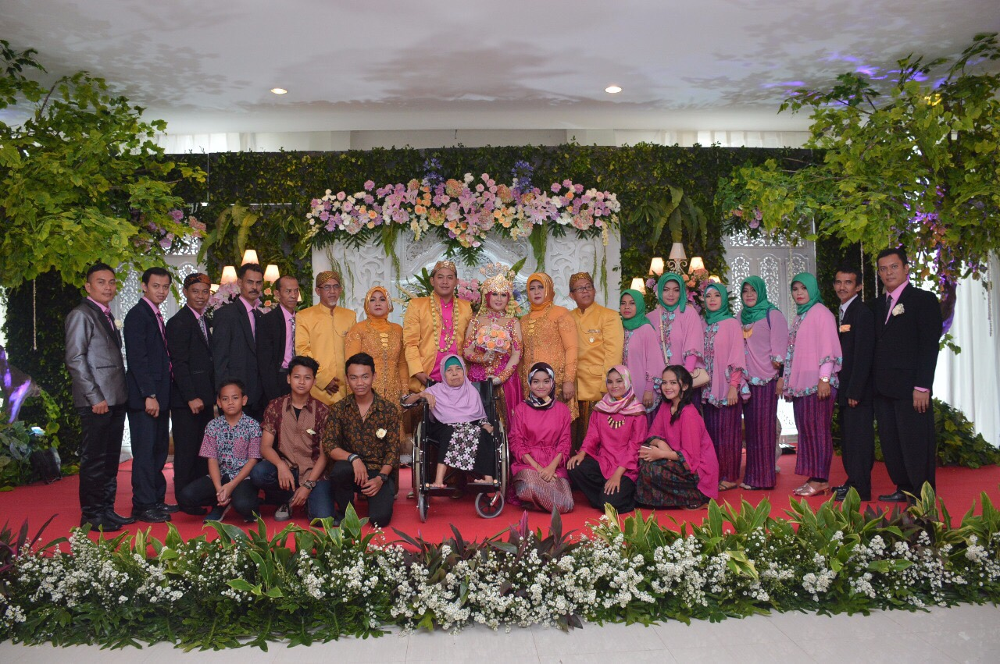
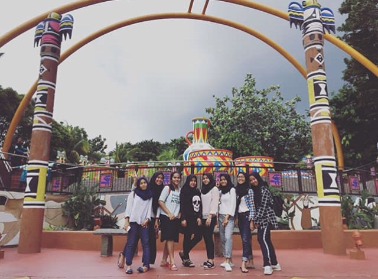
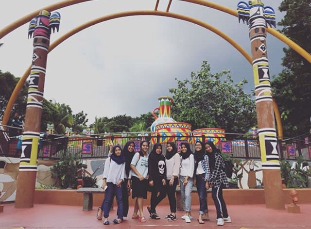
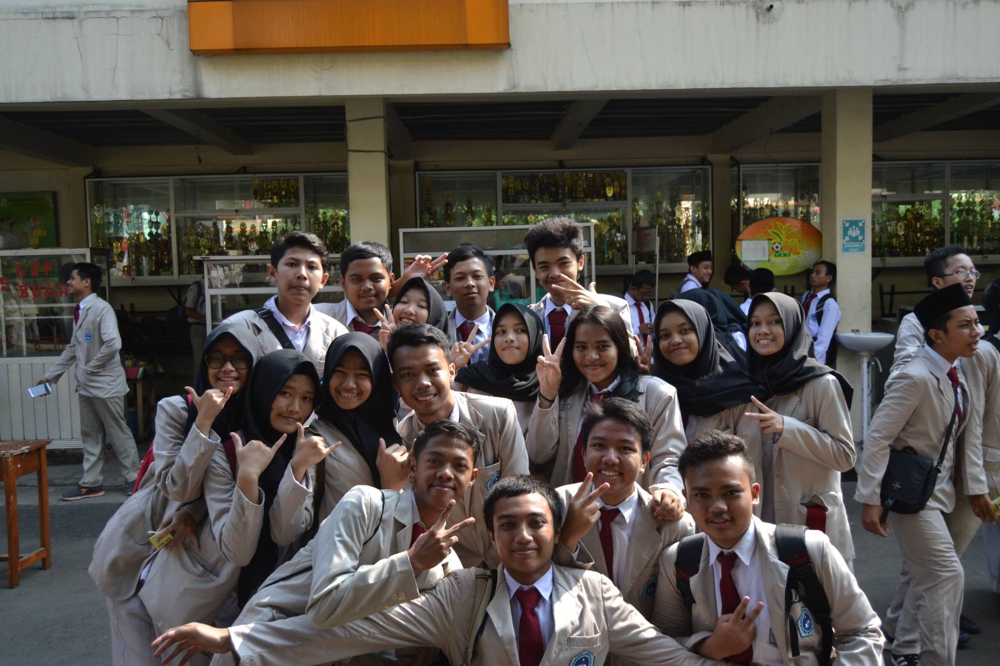
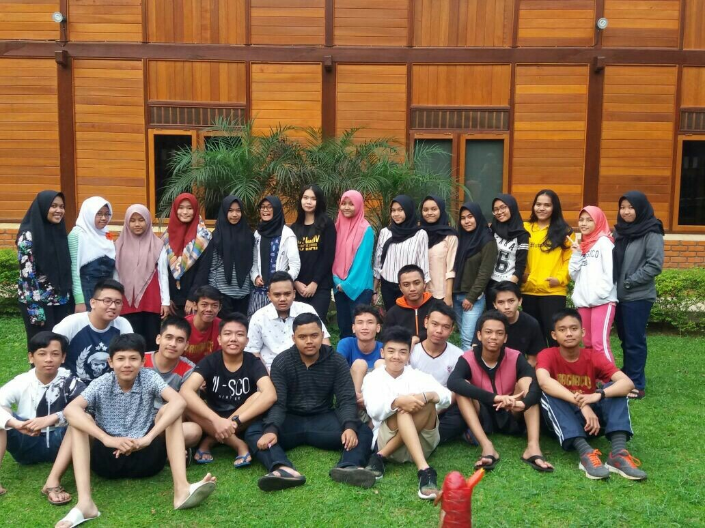

HELLO EVERYONE!
ABOUT
Nama saya Azzahra Salma Kamila, biasa dipanggil Ara, lahir di Bogor 06 juli 2002. Sekarang bersekolah di SMK-SMAK Bogor sekarang saya kelas 11 angkatan 63 yang nama angkatannya Pragnacio Neutrina, oleh karena itu saya ngekos di Wisma Jihan di Jalan Ciheuleut atau yang biasa disebut wisji oleh teman-teman saya. Saya sebenarnya tinggal di Cileungsi, maka dari itu saya ngekos.
LOVE OF MY LIFE
A half of my heart.
Saya adalah anak pertama dari dua bersaudara, adik saya baru berumur 2 tahun . Saya punya satu mama dan satu ayah, yang sama sama berasal dari suku sunda, punya satu aja cukup ko gamau nambah nambah lagi hehe, and i love them all soooo much, dan karena mereka inilah yang selalu bikin saya kangen rumah dan pengen cepet cepet hari jumat untuk pulang.

Big Family
Jadi ini foto keluarga besar saya, mama saya merupakan anak ke 6 dari 7 bersaudara dan ayah saya anak ke 1 dari 4 bersaudara jadi nenek dan kakek saya dari mama mempunyai 14 cucu dan 1 cicit dan kalau nenek dan kakek dari ayah mempunyai 4 cucu diantaranya adalah saya dan adik saya. Tapi sayangnya kakek saya dari ayah ataupun mama sudah meninggal dua dua nya jadi saya tidak punya kakek lagi deh.
My beloved bestfriends
Mereka adalah teman dekat saya sewaktu di SMP tepatnya kelas 9. kemana-mana kita pasti selalu bareng-bareng. jadi rata-rata dari kita itu lanjutin SMA di sekolah yang sama, cuman saya dan satu temen saya yaitu yang tidak pake kerudung yang lanjutin sekolah di sekolah yang berbeda. Tapi seiring berjalannya waktu, yang masih sering main bareng cuman bertiga salah satunya saya sedih banget kan, padahal dulu tuh kita deket bangett lho.

 

Support system.
Jadi ini adalah oknum oknum yang membuat aku jadi sering main, mereka yang nyuruh buat hemat tapi mereka juga yang bikin boros, yang selalu ada disaat sedih ataupun seneng, yang selalu bantuin dan ngehibur disaat lagi down, aku sayang mereka dan pasti kalau mereka liat ini aku diketawain. Mereka tuh 24/7 banget kaya sister from another mother gitu wkwk. Dulu waktu kelas 10 kita sekelas tapi sekarang karna udah kelas 11 jadi ga sekelas lagi deh, sedih si tapi yaudalah ya gimana lagi. pokonya i love them to the moon and back!
Another Love Of My Life
  
"Laughter is timeless. Imagination has no age. And dreams are forever"